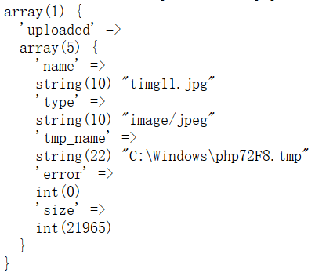

$_FILES变量
文件上传是网站的一个功能，如果一个文件上传没有经过安全检测，就可能形成上传漏洞，导致攻击者可以上传可执行脚本，即通常说的webshell。
PHP接收前端上传的文件时，利用全局变量$_FILES存储一些文件信息。
//form表单：
<form action="" method="POST" enctype="multipart/form-data">
<input type="file" name="uploaded">
<input type="submit" name="upload" value='submit'>
</form>
//PHP端：
var_dump($_FILES);
结果：

$_FILES数组存储了一个元素，这个元素是一个关联数组，数组名为"uploaded"，其中有5个键值对：
name 文件名
type 文件类型
tmp_name 临时文件路径
error 文件上传的错误代码
size 文件字节大小
Low级别
<?php
if( isset( $_POST[ 'Upload' ] ) ) {
// 临时文件移动路径
$target_path = DVWA_WEB_PAGE_TO_ROOT . "hackable/uploads/";
$target_path .= basename( $_FILES[ 'uploaded' ][ 'name' ] ); // basename返回文件名，可传入第二个参数，可用于去掉后缀
// 是否成功移动临时文件
if( !move_uploaded_file( $_FILES[ 'uploaded' ][ 'tmp_name' ], $target_path ) ) {
// 否
echo '<pre>Your image was not uploaded.</pre>';
}
else {
// 是
echo "<pre>{$target_path} succesfully uploaded!</pre>";
}
}
?>
简述：首先构造移动路径，再利用move_uploaded_file()移动临时文件。
LOW级别的代码完全没有对上传文件检测，以致于可以上传任何格式的文件。
Medium级别
<?php
if( isset( $_POST[ 'Upload' ] ) ) {
// 临时文件移动路径
$target_path = DVWA_WEB_PAGE_TO_ROOT . "hackable/uploads/";
$target_path .= basename( $_FILES[ 'uploaded' ][ 'name' ] );
// 获取文件信息
$uploaded_name = $_FILES[ 'uploaded' ][ 'name' ];
$uploaded_type = $_FILES[ 'uploaded' ][ 'type' ];
$uploaded_size = $_FILES[ 'uploaded' ][ 'size' ];
// 是否为图片类型
if( ( $uploaded_type == "image/jpeg" || $uploaded_type == "image/png" ) &&
( $uploaded_size < 100000 ) ) {
// 是否成功移动临时文件
if( !move_uploaded_file( $_FILES[ 'uploaded' ][ 'tmp_name' ], $target_path ) ) {
// 否
echo '<pre>Your image was not uploaded.</pre>';
}
else {
// 是
echo "<pre>{$target_path} succesfully uploaded!</pre>";
}
}
else {
// 非法文件
echo '<pre>Your image was not uploaded. We can only accept JPEG or PNG images.</pre>';
}
}
?>
Medium级别比Low级别多了一项检测步骤，它检测两个信息，一是type，判断是否为图片类型jpeg或者png；二是文件大小size，判断size是否小于100000字节。
这个级别虽然多了一层对文件类型type的安全检测，但type可以通过burpsuite抓包修改，从而绕过检测。

High级别
<?php
if( isset( $_POST[ 'Upload' ] ) ) {
// 临时文件移动路径
$target_path = DVWA_WEB_PAGE_TO_ROOT . "hackable/uploads/";
$target_path .= basename( $_FILES[ 'uploaded' ][ 'name' ] );
// 获取文件信息
$uploaded_name = $_FILES[ 'uploaded' ][ 'name' ];
$uploaded_ext = substr( $uploaded_name, strrpos( $uploaded_name, '.' ) + 1);
$uploaded_size = $_FILES[ 'uploaded' ][ 'size' ];
$uploaded_tmp = $_FILES[ 'uploaded' ][ 'tmp_name' ];
// 判断是否图片类型
if( ( strtolower( $uploaded_ext ) == "jpg" || strtolower( $uploaded_ext ) == "jpeg" || strtolower( $uploaded_ext ) == "png" ) &&
( $uploaded_size < 100000 ) &&
getimagesize( $uploaded_tmp ) ) {
// 是否成功移动临时文件
if( !move_uploaded_file( $uploaded_tmp, $target_path ) ) {
// 否
echo '<pre>Your image was not uploaded.</pre>';
}
else {
// 是
echo "<pre>{$target_path} succesfully uploaded!</pre>";
}
}
else {
// 非法文件
echo '<pre>Your image was not uploaded. We can only accept JPEG or PNG images.</pre>';
}
}
?>
High级别同样是检测文件类型，但并不是通过type属性进行，而是通过文件后缀。这里可以上传一个图片木马，再和文件包含漏洞配合，或者解析漏洞(IIS6,IIS7,Nginx,Apache)。
Impossible级别
<?php
if( isset( $_POST[ 'Upload' ] ) ) {
// Check Anti-CSRF token
checkToken( $_REQUEST[ 'user_token' ], $_SESSION[ 'session_token' ], 'index.php' );
// 获取文件信息
$uploaded_name = $_FILES[ 'uploaded' ][ 'name' ];
$uploaded_ext = substr( $uploaded_name, strrpos( $uploaded_name, '.' ) + 1);
$uploaded_size = $_FILES[ 'uploaded' ][ 'size' ];
$uploaded_type = $_FILES[ 'uploaded' ][ 'type' ];
$uploaded_tmp = $_FILES[ 'uploaded' ][ 'tmp_name' ];
// 临时文件移动路径
$target_path = DVWA_WEB_PAGE_TO_ROOT . 'hackable/uploads/';
//$target_file = basename( $uploaded_name, '.' . $uploaded_ext ) . '-';
$target_file = md5( uniqid() . $uploaded_name ) . '.' . $uploaded_ext;
$temp_file = ( ( ini_get( 'upload_tmp_dir' ) == '' ) ? ( sys_get_temp_dir() ) : ( ini_get( 'upload_tmp_dir' ) ) );
$temp_file .= DIRECTORY_SEPARATOR . md5( uniqid() . $uploaded_name ) . '.' . $uploaded_ext;
// 判断是否图片类型（检测type和后缀名）
if( ( strtolower( $uploaded_ext ) == 'jpg' || strtolower( $uploaded_ext ) == 'jpeg' || strtolower( $uploaded_ext ) == 'png' ) &&
( $uploaded_size < 100000 ) &&
( $uploaded_type == 'image/jpeg' || $uploaded_type == 'image/png' ) &&
getimagesize( $uploaded_tmp ) ) {
// Strip any metadata, by re-encoding image (Note, using php-Imagick is recommended over php-GD)
if( $uploaded_type == 'image/jpeg' ) {
$img = imagecreatefromjpeg( $uploaded_tmp );
imagejpeg( $img, $temp_file, 100);
}
else {
$img = imagecreatefrompng( $uploaded_tmp );
imagepng( $img, $temp_file, 9);
}
imagedestroy( $img );
// 复制并重命名文件
if( rename( $temp_file, ( getcwd() . DIRECTORY_SEPARATOR . $target_path . $target_file ) ) ) {
// 成功
echo "<pre><a href='${target_path}${target_file}'>${target_file}</a> succesfully uploaded!</pre>";
}
else {
// 失败
echo '<pre>Your image was not uploaded.</pre>';
}
// 删除临时文件
if( file_exists( $temp_file ) )
unlink( $temp_file );
}
else {
// 非法文件
echo '<pre>Your image was not uploaded. We can only accept JPEG or PNG images.</pre>';
}
}
// Generate Anti-CSRF token
generateSessionToken();
?>
这个级别的防护强度已经很高了，不仅检测后缀名和type，同时重命名文件导致上传图片马也找不到脚本，还会检测文件内容，更细节的地方是手动删除临时文件，安全性非常高。